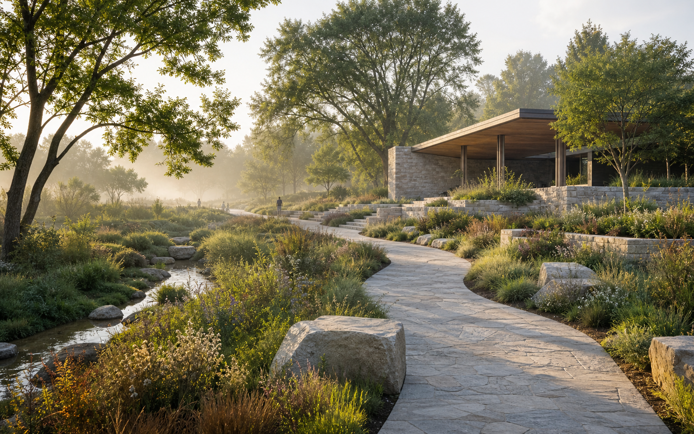

GÜNCEL HABERLER
Tümü →Haberler
İçerikler hazırlanıyor…

Doğa · Tasarım · Ortak akıl
Mesleki kaliteyi yükselten, sürdürülebilirliği odağına alan ve sektörün tüm paydaşlarını aynı zeminde buluşturan bağımsız bir meslek ağı.
PEYZAJDER gündemi
Dijital yarışma platformu
PEYZAJDER yarışma platformu; aktif yarışmaları, sonuç duyurularını ve tamamlanan süreçleri tek merkezde izlenebilir hale getirir.
PEYZAJDER hakkında
Peyzaj mimarları ile sektör profesyonelleri arasında bilgi, deneyim ve iş birliği köprüsü kuruyoruz. Kentler, doğal alanlar ve yaşam çevreleri için kalıcı değer üreten çalışmaları destekliyoruz.
Hakkımızda → Kurullar →Odak alanlarımız
Seminerler, webinarlar ve uzman buluşmalarıyla sürekli öğrenme.
İklim duyarlı tasarım, su yönetimi ve ekolojik restorasyon.
Kamu, akademi ve özel sektör arasında güçlü ortaklıklar.
Yaşam çevrelerini iyileştiren gönüllü çalışmalar ve projeler.
PEYZAJDER Firma Rehberi
Üye peyzaj mimarlığı ofislerini, uygulama firmalarını ve sektör tedarikçilerini uzmanlık alanı ile şehre göre keşfedin.
PEYZAJDER fırsat alanı
Ana sayfa sponsoru olarak eklenen firmalar burada logosu ve web bağlantısıyla görünür. Yarışma sponsoru seçilenler ise yarışmalar sayfasındaki sponsor alanında listelenir.
Sponsor olmak için iletişime geç ↗Üye firmaların peyzaj mimarı, teknik ekip, uygulama veya staj ilanları bu alandan duyurulur.
İlanları gör →Firma rehberindeki üyeler uzmanlık alanları, şehirleri ve web bağlantılarıyla ziyaretçilere ulaşır.
Firma rehberine git →Birlikte daha güçlüyüz
Bilgiye, güçlü bir profesyonel ağa ve ortak projelere erişin.
Üyelik başvurusu